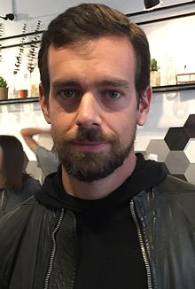

Dorsey was born and raised in St. Louis,the son of Marcia (Smith) and Tim
Dorsey He is of part Italian descent.His father worked for a company that
developed mass spectrometers and his mother was a homemaker.
He was raised
Catholic, and his uncle is a Catholic priest in Cincinnati. He went to Catholic
high school, at Bishop DuBourg High School.
By age fourteen, Dorsey had become interested in dispatch routing. Some of the
open source software he created in the area of dispatch logistics is still used
by many taxi cab companies.
Dorsey attended the Missouri University of Science
and Technology before subsequently transferring to New York University Tandon
School of Engineering, but he dropped out. He first came up with the idea that
became Twitter at New York University.While working on dispatching as a
programmer, he later moved to California.
In Oakland in 2000, Dorsey started his company to dispatch couriers, taxis, and
emergency services from the Web. His other projects and ideas at this time
included networks of medical devices and a "frictionless service market".
In July
2000, building on dispatching and inspired in part by LiveJournal and possibly
by AOL Instant Messenger, he had the idea for a Web-based realtime status/short
message communication service.
When he first saw implementations of instant messaging, Dorsey wondered whether
the software's user status output could be shared among friends easily.He
approached Odeo, which at the time happened to be interested in text messaging.
Dorsey and Biz Stone decided that SMS text suited the status message idea, and
built a prototype of Twitter in about two weeks.
The idea attracted many users
at Odeo and investment from Evan Williams who had left Google after selling Pyra
Labs and Blogger.
Williams, Stone and Noah Glass co-founded Obvious Corporation, which then spun
off Twitter Inc. with Dorsey as the CEO. As chief executive officer, Dorsey saw
the startup through two rounds of funding by the venture capitalists who backed
the company.
He reportedly lost his position for leaving work early to enjoy
other pursuits such as yoga and fashion design.
As the service began to grow in popularity, Dorsey chose the improvement of
uptime as top priority, even over creating revenue – which, as of 2008, Twitter
was not designed to earn.
Dorsey described the commercial use of Twitter and its
API as two things that could lead to paid features.He describes his three
guiding principles, which he says are shared by the company, as simplicity,
constraint and craftsmanship.
On October 16, 2008, Williams took over the role of CEO, while Dorsey became
chairman of the board. On March 28, 2011, Dorsey returned to Twitter as
Executive Chairman after Dick Costolo replaced Williams as the CEO. On June 10,
2015, Costolo announced that he was resigning as CEO of Twitter effective July
1, 2015.
Dorsey would assume the post of Interim CEO upon Costolo's departure.
He was named permanent CEO of Twitter on October 5, 2015.On the day after the
controversy about Twitter's new algorithms for tweets, Dorsey responded to the
trend saying it was only a hoax
In May 2016, Dorsey announced that Twitter would not count photos and links in
the 140-character limit to free up more space for text. This move was an attempt
to entice new users since the number of tweets per day was at an all-time low of
about 300 million in January 2016 compared to about 500 million in September
2013 and its peak of 661 million in August 2014.
On November 17, 2016, Dorsey tweeted a public apology for an automated system
error that allowed a hate ad to appear on Twitter that violated Twitter's user
policy. The error occurred within one day of Twitter suspending multiple
accounts associated with the alt-right movement.
On November 22, 2016, Dorsey was briefly suspended from his own Twitter user
account with 3.9M followers. After restoring the account Dorsey tweeted the
suspension was due to an "internal mistake.
Dorsey developed a small business platform to accept debit and credit card
payments on a mobile device called Square, released in May 2010. The small,
square-shaped device attaches to iPhone, iPad, iPod Touch, or Android devices
via the headphone jack, and as a mini card reader allows a person to swipe their
card, choose an amount to transfer to the recipient and then sign their name for
confirmation.
Square is also a system for sending paperless receipts via text
message or email, and is available as a free app for iOS and Android OS.The
company grew from 10 employees in December 2009 to over a hundred employees by
June 2011. Square's office is located on Market Street in San Francisco.In
September 2012, Business Insider magazine valued Square Inc. at $3.2 billion.
Dorsey is CEO of Square, Inc. On October 14, 2015, Square filed for an IPO to be
listed on the New York Stock Exchange.